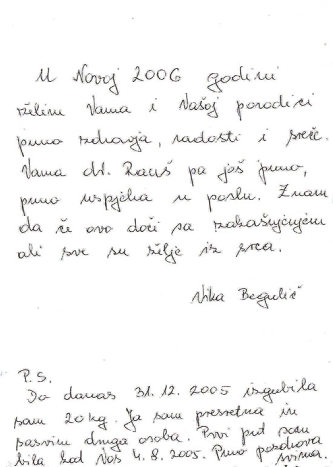

|
|
|
CENTRE D'HYPNOSE RAUSCH
CROATIE, tel. 00 385 91 529 2547
QU'EST CE QU'EST L'HYPNOSE? QUE VEUT DIRE L'HYPNOSE?
L'hypnose est vieille comme le monde, déja les Sumériens l'un des peuples plus ancien du
monde, pratiquaient l'hypnose de la même facon qu'on la pratique aujourd'hui. Quand on parle
de l'hypnose on pense souvent à la somnolence ( un état de sommeil) qui n'a aucun rapport
avec l'action de dormir.
Il est exacte que durant l'hypnose on semble dormir mais on ne dort pas et on n'est pas réveille. C'est un état modifié de conscience, qui permet un contact direct avec l'esprit inconscient. L'hypnotiseur avec ses suggestions provoque un état qui ressemble au sommeil, qui pour un moment change l'état conscient, la mémoire et les réactions psychiques.
Des suggestions contre la personnalité sont tout a fait exculses.
Comment ressentons nous l'hypnose?
Beaucoup de personnes sont excitées ou ont peur seulement à la pensée de l'hypnose, ils ne savent pas ce qu'il va se passer et ce qui les attend... Certains aprés le traitement d'hypnose sont deçus, car ils pensent de n'avoir rien ressenti de particuler.
Pourquoi c'est comme ça?
Chaque fois quand on dort on est dans un état hypnotique, une phase entre le réveil et le sommeil. Cest un état qui nous est connu. Et ne représente rien de nouveau. Chaque personne en conduisant l'automobile connait cette situation, on conduit dans un parcours connu, nos pensées vaguent quelque part et tout d'un coup on se trouve devant le but sans savoir comment on y est arrive. Nous avons ressenti un état hypnotique avec une perte de temps. On ressent la même chose en lisant un livre intensément ou quand on regarde un film. On peut ressentir un état hypnotique n'importe où et on ne doit pas avoir peur de ça.
L'hypnose est un état modifié de la conscience, cet état peut avoir plusieurs degrés d'intensité, léger ou plus profond ce qui dépend de l'intention. Par exemple, pour l'arrêt de fumer ou pour la perte de poids, il suffit d'une hypnose légère ou d'un hypnose de densité moyenne. Par contre durant les opérations il faut une hypnose très profonde.
Les différantes phases de la conscience en état hypnotique
- Etat de réveil – Notre conscience est encore là, elle filtre les sensations extérieures. Nous acceptons seulement l'important.
- Hypnose légère – Ici notre conscience est légèrement limitée. La personne hypnotisée se concentre sur un point, elle est encore consciente de tout. Mais l'accès à la conscience est déja possible.
- Transe moyenne – Ici la conscience est tout a fait limitée. Les suggestions sont très bien acceptées. Maintenant des simples ordres donnes par l'hypnotiseur sont possible, bien que la conscience les filtre encore.
- Transe profonde – Maintenant la conscience est tout a fait excluse, et la capacibilité critique est environ zéro. A ce moment sont possible des hallucinations visuelles et acoustiques qui nous sont connues dans les show-programmes. Des suggestions qui seraient en grande partie contre la propre personnalité sont impossible. Il arrive souvent de l'amnésie (perte de mémoire). A peu près un tiers des personnes en un brêve temps se trouve dans cet état. Environ deux tiers ont besoin de plus de temps ou de plus d'initations avant d'arriver dans une transe profonde.
- Hypnose réveillée – L'hypnositeur continue son contact avec la personne même si elle a l'air d'être tout a fait réveillée. La personne hypnotisée peut même parler avec d'autres personnes. De l'extérieur il n'est pas possible d'observer l'état d'hypnose. Par contre l'hypnotiseur peut donner des suggestions qui sans problèmes arrivent jusque l'inconscient. La personne hypnotisée réagit tout a fait même a des suggestions insensées. Et peut même avoir des hallucinations.
Peut-on rester hypnotisé constamment?
Même si en cas (très impossible) l'hypnotiseur par hasard oublie de réveiller la personne ou est incapable de le faire, elle se réveillera tout même. Donc, il n'y a aucun danger que quelqu' un reste involontairement constamment hypnotisé.
Pourquoi l’hypnose de la guérison ?
Nous vivons dans une période d’important développement technologique et de grands changements. Et puisque dans la vie il faut tout payer, nous payons aussi pour le développement. Souvent on le paie avec notre santé ( le stress, la rapidité de la vie, pression constante). Touts ces états d’âmes sont la cause de beaucoup de maladies. Le centre végétatif nerveux lentement n’est plus en équilibre et l’homme devient malade.... L’hypnose de la guérison, surtout dans le domaine de la reconnaissance et l’élimination des causes des maladies mentales, promait des résultats extraordinaires. Elle est centrée sur l’intégration globale de traitements du corp et de l’âme et ses succés ont été très convaincants.
CENTRE D'HYPNOSE RAUSCH
CROATIE, tel. 00 385 91 529 2547
Important ! L’hypnose est un instrument très puissant, elle ne peut pas éteindre ou remplacer votre propre volonté, mais ne peut que la soutenir.
DE L’HYPNOSE A L’ARRÊT DE FUMER
Reconnaître le motif
La condition préalable de l’arrêt de fumer est de reconnaître l’absurdité de cet acte.
Et si cela serait si simple !
La nicotine est une substance qui rend la personne rapidement dépendante. Ils sont très
rares ceux qui ont grâce à leur propre volonté cesse de fumer. Heureusement il éxiste
d’autres possibilités parmi lesquelles et l’hypnose. Elle ne remplace pas la propre volonté,
mais elle la soutient.Le chemin d’une vie sans cigarettes peut être soulagé et préparé grâce
à l’aide des suggestions de l’hypnotiseur dans un état de transe.
Mais ce chemin, vous devez le parcourir seul. La chance du succés est très grande car l’hypnose commence là où est le problème de « dépendance à la nicotine » et ça c’est dans la tête ! Il n’y a pas d’effets secondaires comme que l’irritabilité et troubles.
Votre niveau d’énergie est croissante peu de temps après votre dernière cigarette. Vous êtes plus actif et vous avez beaucoup de désirs de vivre. Vos sensations, odorat et goût deviennent plus intense. Les gens qui arrêtent de fumer vive en moyenne 5 ans plus. Et dans beaucoup de cas encore plus.

Monsieur Rauch!
Reçoivez bien les saluts de Ljubljana. J’ai suis été chez vous le 3 décembre 2005 et de ce jour je ne fume pas. (J’ai fumé pour 30 ans quarante cigarettes chaque jour). Je vous exprime mes remerciements sincères! La vie sans cigarettes est beaucoup plus belle! Encore une fois merci bien et je vous souhaite beacoup de succès pendant votre travail!
Igor

Auourd’hui je fête deux ans depuis quand vous m’avez aidé de me délivrer du vice de fumer qui avait duré bien 24 ans avec 2-3 paquettes de cigarettes chaque jour.Vlado Koralič de Cerna

Estimé monsieur Darko,
Je vous envoie mes nouvelles de nouveau pour vous dire qui je ne fume encore. Il
y a trois ans: grace à vous. Je vous souhaite de heureuxes fêtes de Noël et une
bonne nouvelle année 2008. Ce sont les souhaits de l’ex fumeuse Andreja. Merci
bien.
COMMENT MAIGRIR GRACE A L’HYPNOSE
D’après une enquête – édition « Robert Koch « de 2003. environ 60 % de la population allemande est atteinte d’obésité et d’autres pays ont le même pourcentage. Cela veut dire que cela n’est pas le problème d’une minorité. Ily a des personnes qui sont heureuse avec leur poids, qui se sentent bien dans leur peau te qui ne désirent rien changer. Par contre, il y a beaucoup de personnes qui souffrent à cause de ces kilos de trop.
Que pouvons nous faire ?
Quelqu’un va souffrir (suer) dans des centres de fitness, d’autres font des diétes (parfois nocive) ou sont à jeun. D’autres prennent des pillules, des poudres, des pièces adhésives etc... ou alors comptent les calories. Malheureusement leur caracteristique est que ça dure uniquement quelque temps. Et quoi après ça ?
Après ça laplupart se retrouve sous l’effet – jojo
Quand on recommence a avoir de nouveau une vie normale, les kilos reviennent plus vite qu’on les as perdus. Cela veut dire que nous devons changer nos habitudes de vie pour toujours et ainsi maigrir. Ici l’hypnose peut nous aider. Les suggestions sur l’inconscient peuvent soutenir et renforcer la propre volonté.

Merci bien pour l'aide qui vous me donne chaque fois que j’en besoin. J’étais chez vous il y a deux ans. Jusqu’à maintenant j’ai maigri 40 kg. Merci beaucoup et que Dieu soit avec vous. Gordana de Postojna.

Jusqu’à 30 décembre 2005, j’ai perdu 20 kg. Je suis très heureuse et j’ai la sensation d’être une autre personne. J’étais chez vous la première fois le 4 août 2005. Bien de saluts a tous. Vika Begulič

Estimé monsieur Rausch,
voilà nous donnons notres nouvelles et nous voulons vous remercir et vous
informer des resultats de votre travail. Mon fils Robert ne fume pas. Mon
mari Stjepan a maigri 30 kg. Moi, Marija j’ai maigri 10 kg. Nous sommes la
famille Zemon de Sesvete, mais nous sommes chez moi à Vir. Bien des saluts
de la famille Zemon.
CENTRE D'HYPNOSE D. RAUSCH
CROATIE, tel. 00 385 91 529 2547
QU’EST –CE QUE LA PHOBIE ?
La phobie est un terme pour les peurs provoquées par des objects, des évènements et situations traumatiques. Le mot phobie dérive du mot grec phobos qui veut dire peur, evasion. Chacun de nous a parfois eu peur devant quelques situations, devant quelques objets, on s’est ressenti en danger de n’importe quel façon ou à cause de l’inconnu. Cette peur, anxiété, vit en nous et cela dépend de nous tous comment faire face à ça.
Il y a plussieurs sortes de phobies et on les divisent en sociales et spécifiques.
En pratique on rencontre le plus souvent, l’agoraphobie, la peur de sortir de la maison, peur de la solitude, peur des gens, de la foulle dans les rues, du traffic...
Les phobies spécifiques sont principalement liées a des événements traumatiques mais peuvent aussi apparaître d’elles – même, et les sont le résultat de peur de situations ou objets irréels. Le plus souvent se manifestent des phobies d’animaux ( peur de chien, serpent,araignee...), phobies de situations ( peur de voler en avion, peur de passer dans un tunnel), peur de blessures ( sang, piqures, accidents) et enfin les phobies de catastrophes naturelles et environnement ( l’eau, l’hauteur, la tempete...).
Les phobies sociales se produisent chez les personnes qui caractérise l’auto – conscience, ces personnes ont peur d’apparaître, de parler en public etc... ils ont un sentiment de peur de critique négative et de honte publique.
CENTRE D'HYPNOSE RAUSCH
CROATIE, tel. 00 385 91 529 2547
Sanja Grohar, une miss de la Slovénie d’autrefois et une fille de Playboy, cachait sa peur. “J’avait peur des balles dans un lieu fermé”, a ammis la belle fille en souriant sympathiquement pendant qu’elle le disait.
Pendant la thérapie, Sanja êtait couchée et elle dormait légèrement pendant 17 minutes depuis lesquelles sa vie a changée. La phobie qui lui persécutait du temps de l’école est disparue finalement.
je ne peux pas assez m’étonner de votre pouvoir qui vous m’avez guéri de ronger les onges. Dès l’automne de 2006, que j’étais chez vous, je n’ai pas rongé plus mes onges et je n’ai pas l’envie de le faire. Vous êtes super. Mille fois merci.
Uroš Kos, Ljubljana